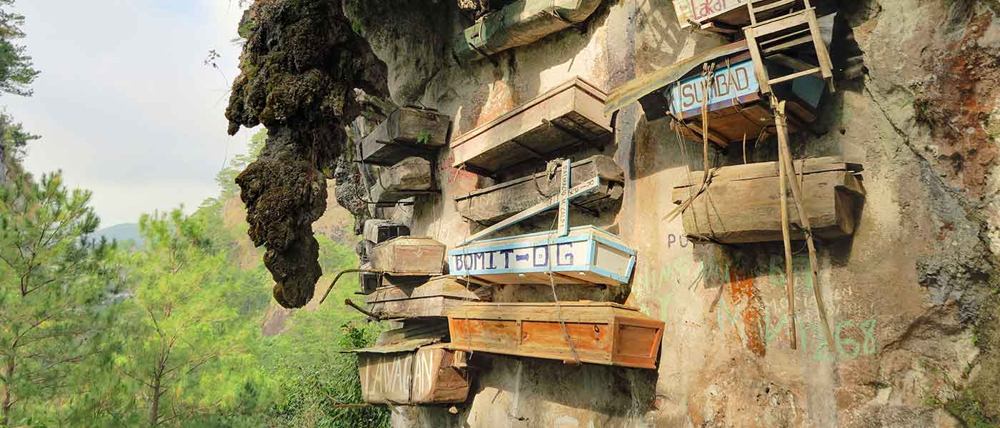

A little journey through the beauty of the Philippine highlands
Discover the Beauty of Cordillera
From breathtaking mountain landscapes to ancient rice terraces,
the Cordillera Administrative Region offers a beautiful blend
of nature, history, and living cultural traditions.
The Cordillera Administrative Region (CAR) is located in Northern
Luzon, Philippines. It is known for its cool highlands, mountain
scenery, traditional weaving, and remarkable cultural heritage.
CAR includes Abra, Apayao, Benguet, Ifugao, Kalinga, Mountain
Province, and the highly urbanized city of Baguio.
Highlands
Mountain landscapes and cool weather
Heritage
Rich traditions and local craftsmanship
Nature
Terraces, forests, and waterfalls
Culture
Distinct communities and traditions
Beautiful Tourist Attractions
Banaue Rice Terraces
These remarkable terraces reflect generations of Ifugao
knowledge and agricultural traditions, surrounded by
beautiful mountain scenery.
Mount Pulag
A popular mountain destination known for its highland
landscapes, sunrise views, and sea of clouds.
Baguio City
Known as the Summer Capital of the Philippines, Baguio
features parks, markets, gardens, and a cool climate.

Sagada
A peaceful mountain destination known for its caves,
scenic views, and distinctive cultural heritage.
Kaparkan Falls
Located in Abra, this natural attraction is admired for
its cascading waters and distinctive limestone formations.
Things to Do
Mountain Hiking
Explore mountain trails and admire the scenic highlands.
Nature Photography
Capture beautiful landscapes, forests, and waterfalls.
Cultural Exploration
Learn about local traditions, weaving, and craftsmanship.
Local Market Visits
Discover fresh produce, handmade crafts, and souvenirs.
Photo Gallery
A glimpse of the scenic destinations waiting to be explored
throughout the Cordillera highlands.
Food and Culture
Pinikpikan
A traditional Cordilleran dish associated with cultural
practices and community gatherings.
Strawberries
Baguio and nearby highland areas are popular for fresh
strawberries and strawberry-based treats.
Traditional Weaving
Local weaving showcases distinctive patterns, techniques,
and cultural identities across communities.
Handicrafts
Handmade products reflect the creativity and heritage
of Cordilleran artisans.
Travel Guide
Best Time to Visit
The dry season is generally suitable for outdoor trips.
Check weather conditions before visiting mountain areas.
Transportation
Baguio is accessible by bus from Metro Manila. Other
destinations may require local buses or vans.
What to Bring
Prepare warm clothing, comfortable footwear, drinking water,
and rain protection for changing mountain weather.
Responsible Travel
Respect local customs, follow community guidelines,
and leave natural places clean.
Where to Stay
Hotels
Hotels in major destinations offer convenient access
to restaurants, shops, and attractions.
Guesthouses
Guesthouses and homestays can offer a welcoming way
to experience local hospitality.
Mountain Lodging
Some highland destinations have simple accommodations
near hiking trails and nature spots.
Festivals and Events
Panagbenga Festival
Baguio's Flower Festival celebrates flowers, creativity,
and the culture of the city.
Lang-ay Festival
A cultural celebration in Mountain Province that
showcases local heritage and traditions.
Community Celebrations
Various communities celebrate their distinct customs,
cultural practices, and local heritage.
Video and Audio
Explore the Cordillera
Listen to the Audio
Open the audio link below to listen in a separate tab.